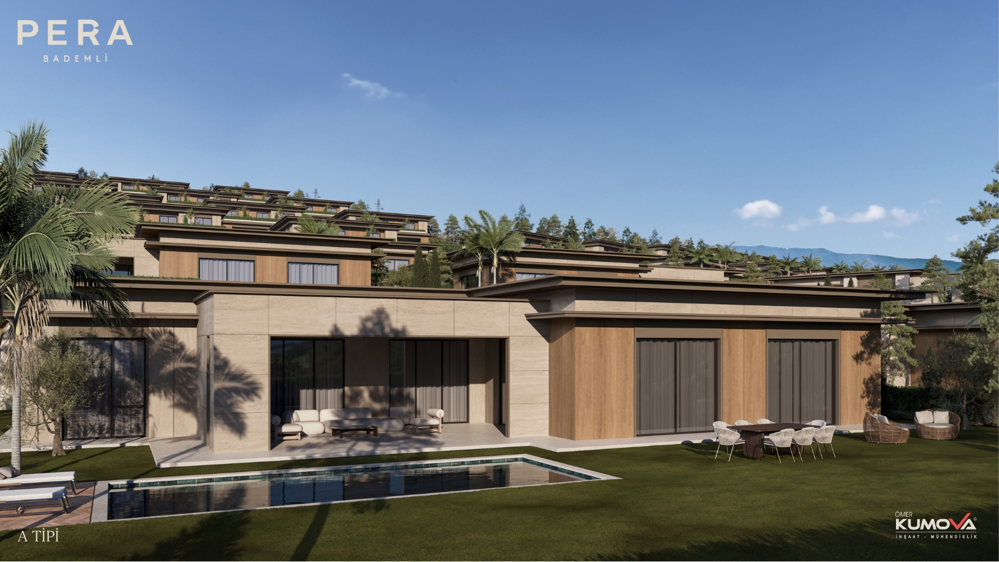
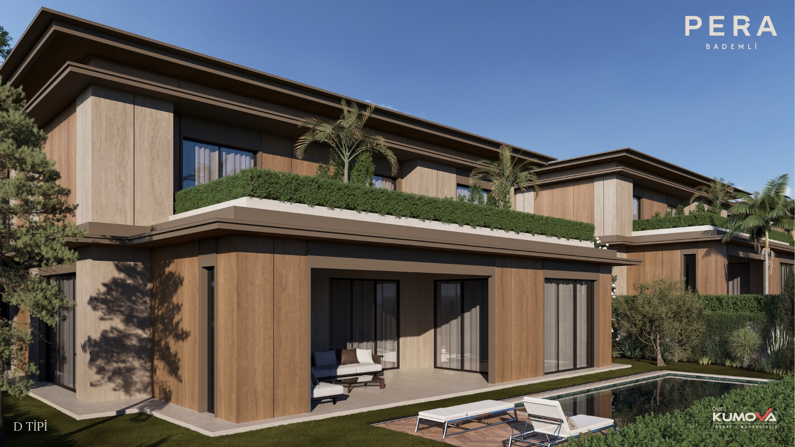
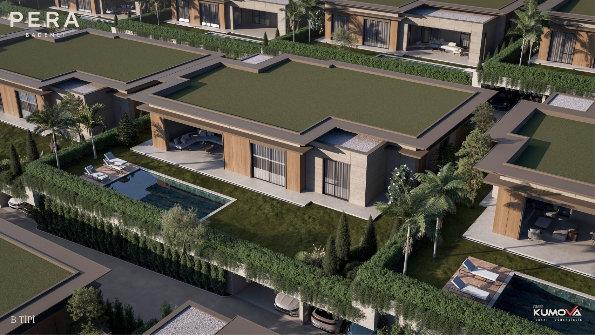
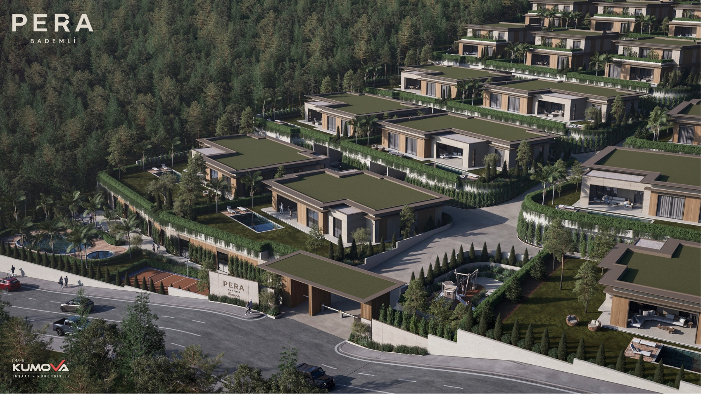

Ömer Kumova İnşaat
Pera Bademli
Bademli, Mudanya, Bursa

Forty-eight villas with private pools on a 48,000 m² site. The developer describes five plan types, including single-storey and duplex homes.
01 / The project in images
Explore the spaces.
Selected original views from the developer’s project gallery.




02 / Project details
Bademli, Mudanya, Bursa
Planned delivery June 2028. Source checked 6 October 2026; availability and dates require developer confirmation.
Your sales contact, in the same place
This example is not accepting enquiries. A published presentation includes the contact details and enquiry links you approve.